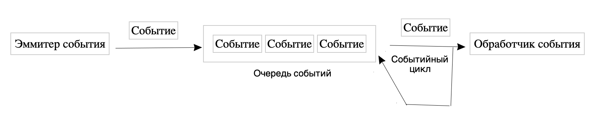

Для взаимодействия с пользователем в JavaScript определен механизм событий. Например, когда пользователь нажимает кнопку, то возникает событие нажатия кнопки. Аналогично когда пользователь вводит в текстовое поле текст, возникает событие этого текстового поля. В коде JavaScript мы можем определить возникновение события и как-то его обработать.
Сначала собственно происходит событие, например, пользователь нажал на кнопку. Объект, который сгенерировал событие, еще называется эмиттером/эмитентом события. После того как произошло событие, оно помещается в очередь событий (event queue), что гарантирует, что события, которые были сгенерированы первыми, также будут обработаны в первую очередь.
Цикл событий (event loop) постоянно проверяет, есть ли новое событие в очереди событий, и если оно есть, соответствующее событие пересылается обработчикам событий (event handler). В JavaScript эти обработчики событий представляют собой простые функции, которые позволяют отреагировать на возникшее событие. Подобный подход еще называют событийным программированием (event-driven programming).

Если для события не определено обработчиков, то для него выполняется действие, которое определено браузером по умолчанию.
В JavaScript есть следующие типы событий:
Применение событий не ограничены только графическим интерфейсом, однако графический интерфейс — наиболее показательная сфера применения событий.
click — возникает при нажатии указателем мыши на элемент
dblclick — возникает при двойном нажатии указателем мыши на элемент
contextmenu — возникает при открытии контекстного меню (правой кнопкой мыши)
mousedown — возникает при нахождении указателя мыши на элементе,
когда кнопка мыши находится в нажатом состоянии
mouseup — возникает при нахождении указателя мыши на элементе
во время отпускания кнопки мыши
mousemove — возникает при прохождении указателя мыши над элементом
mouseover — возникает при вхождении указателя мыши в границы элемента
mouseout — возникает, когда указатель мыши выходит за пределы элемента
mouseenter — возникает при вхождении указателя мыши в границы элемента
mouseleave — возникает, когда указатель мыши выходит за пределы элемента